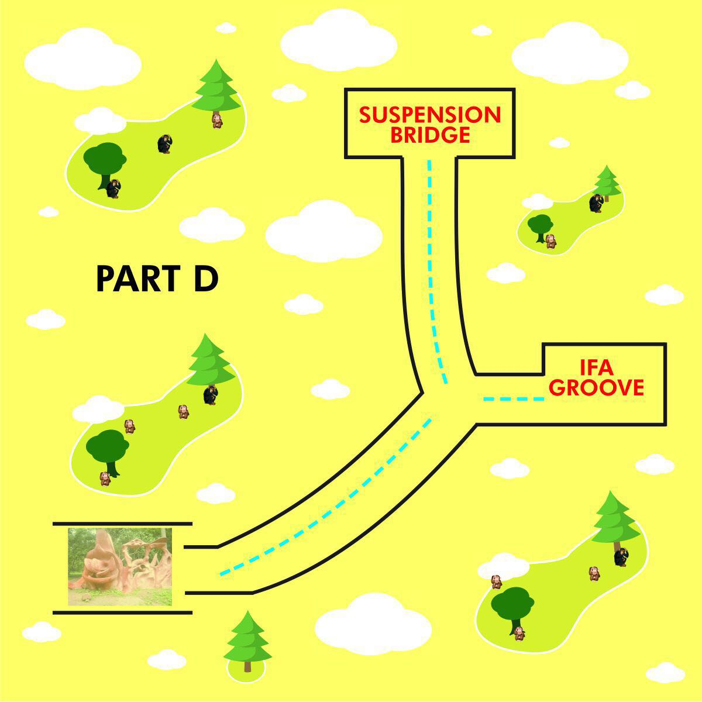

The Suspension Bridge
The bridge was constructed in 1935 by colonial masters to help the people Osogbo to gets to their farm settlements easily especially during the rainy season that the water fills the road path which makes people to be unable to reach their farm settlements
Direction
The Suspension Bridge can be reached ither by connecting map B with that of C or From Map B to D


